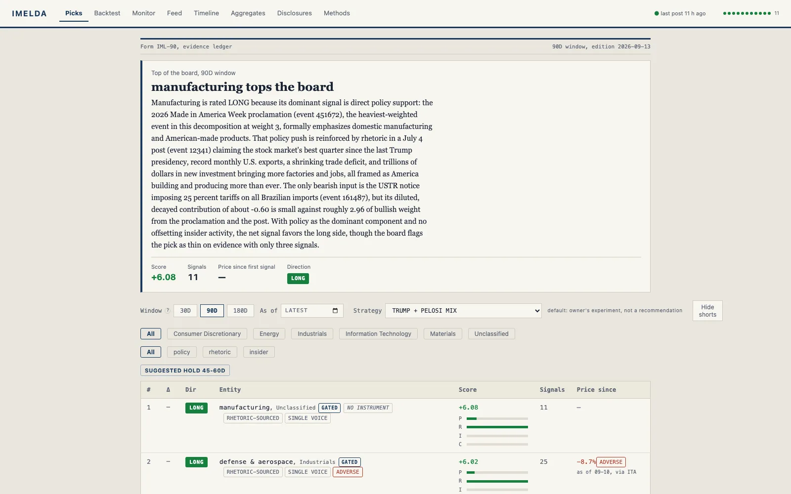

Markets · LLM · Data pipeline
Imelda
Which public-figure posts move markets — and by how much?

01 Problem
Posts by prominent public figures move stocks, but the attribution is usually hand-wavy — a headline asserts a connection without showing the post, the affected securities, or the price action. I wanted a tracker that closes that loop: the source post, what it claims about which tickers or industries, and the daily bars next to it, all inspectable.
02 Approach
Imelda ingests posts by public figures (v1: Truth Social archive) plus official actions — executive orders, proclamations, and trade-agency notices from the Federal Register API — into one feed with kind badges. A Claude extraction pass identifies affected stocks and industries per event; daily price bars from Stooq are joined for the market side.
Adding a source means adding one SourceSpec entry in a registry, not a new pipeline. Extraction quality is guarded by a prompt eval over real analyzed events and a mechanical audit gate before verdict batches apply. A human-curated holdings register drives conflict badges, and a keyless analysis path lets agent waves do extraction without an API key. The picks board, track record, and provenance views keep every claim checkable.
03 Tech stack
Frontend
Backend
Infrastructure
04 Outcome
The service runs 24/7 as a single process — Fastify API, scheduler, and static SPA — with ingestion, keyed or keyless analysis, and the full Feed / Timeline / Aggregates / picks UI live. The local gate (typecheck, unit tests, web tests, build) plus Playwright end-to-end specs against a seeded database keep the pipeline honest as sources are added.